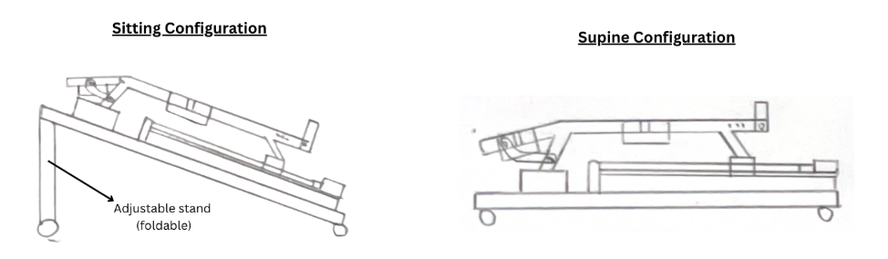

6. Conclusion
Based on all of our tests and evaluation of the final Kinetix device we can conclude that we meet all of our key critical functions. The details regarding deliverables, future works, and impact would be explained further in the following sections.
6.1 Fulfilment of Deliverables
By the final stage, the Kinetix integrated system consisting of both the User Interface and physical device successfully met the majority of its design specifications, with a fully functional prototype demonstrating integrated mechanical movement, sensing, control, and user interface capabilities. Overall, most key deliverables were fulfilled, including system integration, user validation, and prototype development, with remaining limitations primarily in advanced sensing validation and quantitative performance metrics, which are addressed in future work (Table 37).
| ID | Test | Achievement | Test Code | Status |
|---|---|---|---|---|
| A1 | Plantar Force Sensing | Range of Force | ST4 | ✅ Successful |
| A2 | Medial-Lateral Force Sensing | Range of Force | ST5 | ✅ Successful |
| A3 | Thigh Force Sensing | Range of Force | ST6 | ✅ Successful |
| A4 | Positional Sensing | Accuracy of Joint Angles | ST7 | ⚠️ Partially |
| B1 | Latency | End-to-end | BT1 | ✅ Successful |
| B2 | Data Sampling Rate | Sampling Rate | — | ✅ Successful |
| D1 | Portability | Weight | DT1 | ✅ Successful |
| D2 | Size | — | DT2 | ✅ Successful |
| D3 | Structure | Type of structure | — | — |
| D4 | Range of Motion (ADL mode) | Range of Hip Adduction | DT3 | ✅ Successful |
| D5 | Range of Hip Abduction | — | — | ✅ Successful |
| D6 | Range of Hip Flexion | — | — | ✅ Successful |
| D7 | Range of Knee Flexion | — | — | ⚠️ Partially |
Table 37. Fulfilment of deliverables summary.
6.3 Future Work
6.3.1 Sensing Subsystem
Based on the Kinetix design specifications, the current priority is to improve the IMU joint angle accuracy such that it falls below 12 degrees consistently. This will be done through the use of Kalman filtering. There is also the possibility of exploring other sensors such as the flex sensor considering that Kinetix have opted for a device-mount sensing subsystem, which eliminates the need for the flexible placement that IMUs offer.
Further research is required to establish clinically acceptable thresholds for force sensing accuracy, as current design targets are primarily based on engineering feasibility rather than validated clinical standards. In clinical validation studies, measurement uncertainty plays a critical role in determining whether sensor outputs are reliable enough for clinical decision-making (Ansermino et al., 2023).
As such, defining acceptable levels of accuracy and uncertainty is essential to ensure that the measured forces are both precise and clinically meaningful. This will guide future iterations of the Kinetix system, enabling refinement of the sensing subsystem to achieve performance that aligns with clinical validation requirements and supports reliable rehabilitation assessment.
6.3.2 Mechanical Subsystem
One potential improvement is the incorporation of enhanced ankle rehabilitation capabilities. While current systems and existing solutions primarily support passive ankle movement, there is an opportunity to extend functionality to include active and resistive ankle exercises, enabling more comprehensive lower-limb rehabilitation, as quoted during the interviews.
"Ankle movement is very useful… there are many things out there to help them passively move their ankle, but not so much beyond that." — OT A
Future iterations of Kinetix could include a seated mode configuration to support rehabilitation in an upright position. This would allow the device to accommodate a wider range of recovery stages and clinical settings, improving usability for patients who are able to perform exercises outside of supine or semi-Fowler positions (Figure 69).

Figure 68. Proposed seated mode configuration for future Kinetix iterations.
On top of that, the current device only has 2 pivot points in the main structure. This resulted in the structure leaning slightly to one side. Adding more pivot points should be able to resolve this issue. The lateral mechanism has much room to be improved upon. A threaded hole could be added on the D-profile shaft to make the connection more secured. Another improvement that could be done is by shifting the motor position to the back to reduce the moment, thus reducing the required torque to move the lateral assembly.
6.3.3 Electrical Subsystem
In terms of the electrical sub-system, a possible improvement is designing printed circuit boards (PCBs) for the overall electrical circuitry when integrating the peripherals and microcontroller together. The current set-up utilises a protoboard with wires and components soldered together for connection. However, it is too bulky and cable management is difficult, and thus makes the overall integration complicated. PCB resolves this issue entirely by reducing the overall package of the electrical circuitry and lightening the weight of the device.
Lastly, there were no tests that were conducted to verify the current and power consumption of the whole system. Although the voltage demand for each component were known, the absence of current and power ratings for each component poses a challenge in scaling the device to Singapore's stroke rehabilitation context.
6.3.4 User Interface Subsystem
While the user interface has comprehensive features related to stroke rehabilitation, contextualisation to Singapore's healthcare can be improved through:
- Localisation and accessibility (language, text-to-voice, etc.) features, which is particularly relevant given Singapore's officially multilingual environment and documented language barriers in clinical care (Synapxe, n.d.).
- Integration with Singapore's National Electronic Health Record (NEHR) or hospital patient management systems to allow session data to flow into existing clinical documentation workflows (MOH, 2022).
- A longitudinal progress dashboard that tracks patient improvement across multiple sessions over weeks or months, rather than single-session reporting, according to our preliminary interviews as seen in Appendix S.
6.3.5 User Tests
The current user testing was limited to assessing device comfort and usability in passive linear mode. Future work will extend testing to active mode conditions, where user-applied forces exceeding predefined thresholds will be evaluated. This will allow for a more comprehensive assessment of system behaviour, particularly the interaction between applied forces, motor response, and lateral motion under both passive and active operation.
6.3.6 Data Processing and Analysis Subsystem
A future iteration could incorporate pattern recognition or machine learning models trained on longitudinal rehabilitation data to suggest progressive treatment parameters such as resistance level, range of motion targets, and session frequency.
However, realising this capability would require large-scale clinical studies involving stroke patients across multiple rehabilitation centres to generate sufficiently diverse and representative training data, as well as regulatory consideration given the clinical implications of algorithmically informed treatment decisions.
The current system generates range metrics such as strength and fatigue, but the relative clinical significance of these metrics, and whether the derived quantities provide additional diagnostic value, has not been formally evaluated (Ranjan et al., 2020). Conducting large-scale targeted metric validation studies would allow the sensing and analysis pipeline to be refined around the indicators that matter most clinically to inform future iterations (Ranjan et al., 2020).
6.2 Impact and Visibility
Kinetix demonstrably reduces the physical workload of rehabilitation specialists while enabling consistent, repeatable, and data-driven therapy sessions. The system enhances engagement through its interactive user interface and gamified feedback, encouraging active participation during rehabilitation (Juan et al., 2025). The ability to support both passive and active modes further enables progressive recovery tailored to individual patient capabilities. An early prototype of the UI and structure of Kinetix was showcased at Industrial Transformation ASIA-Pacific (ITAP) 2025 where the MOS Alvin Tan recognised the potential of gamification in the stroke rehabilitation context.
As found during our interviews with physiotherapist X, the data collected by the system also opens opportunities for long-term patient monitoring and machine learning-driven optimisation of therapy protocols. With further validation and refinement, Kinetix has strong potential for clinical deployment, patentability, and broader impact within the healthcare technology sector.